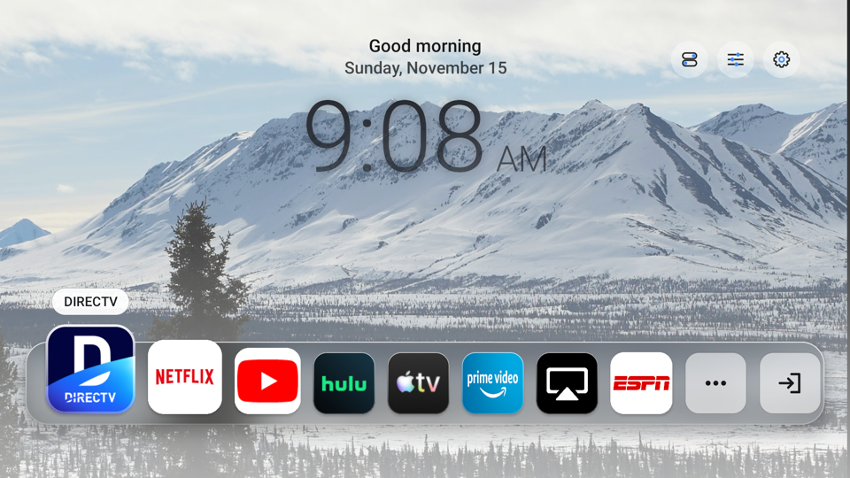
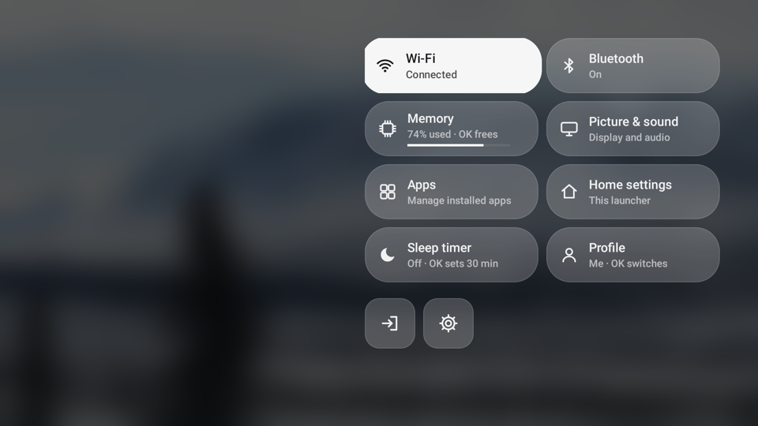
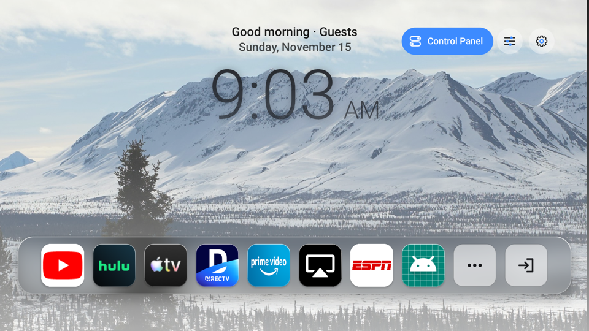

A clean glass home screen for Fire TV
glass-tv-launcher replaces Amazon's Fire TV home screen with a frosted-glass dock and a big clock. No sponsored rows, no auto-playing trailers, no tracking. It's free and open source.

Features
- Glass dockApp icons in a frosted dock that magnifies the focused app, plus a folder for the rest.
- Big clock and greetingA glass clock lit from above, with "Good morning" or "Good evening".
- Adapts to your wallpaperText and glass switch between light and dark to stay readable on any picture.
- Control PanelWi-Fi, Bluetooth, free memory, picture and sound, inputs and settings in one place.
- Sleep timerTurns the TV off after 30, 60, 90 or 120 minutes.
- ProfilesMe, Guests and Kids, each with its own apps in the dock.
- Live TVOne tile resumes cable or antenna on the last channel, with the guide working.
- PrivateNo internet permission and no advertising ID. Your apps, HDMI inputs and casting are left alone.


Install
You need a computer with adb, and the TV on the same network with Settings › My Fire TV › Developer options › ADB debugging turned on.
git clone https://github.com/schavan78/glass-tv-launcher.git cd glass-tv-launcher adb connect YOUR-TV-IP:5555 ./launcher/install.sh
The installer checks the download's checksum, installs the launcher and makes it your home screen. To go back to Amazon's home screen at any time, run ./launcher/install.sh --undo.
Works on
Tested on a Fire TV smart TV (Fire OS 7, Android 9, 4K). It's built on dumbtv, which supports Fire TV Sticks, Cubes and smart TVs on Fire OS 6 to 8.